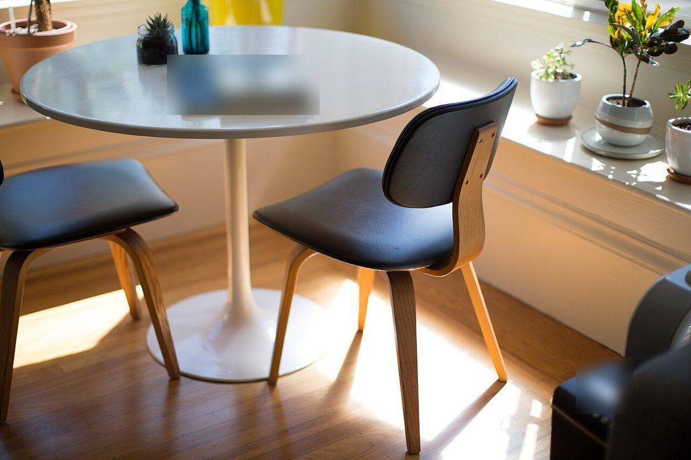
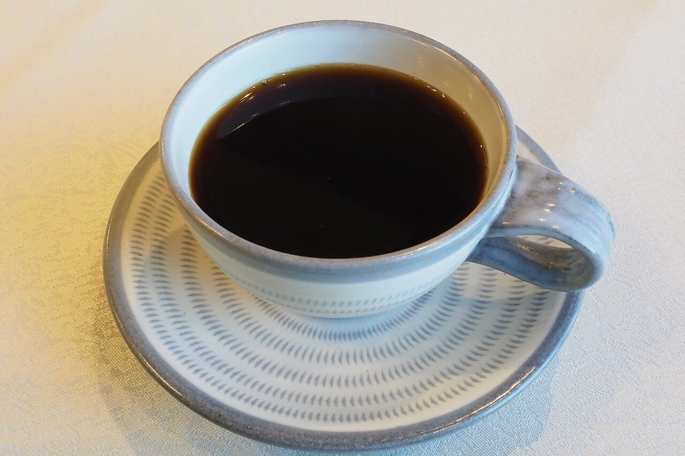
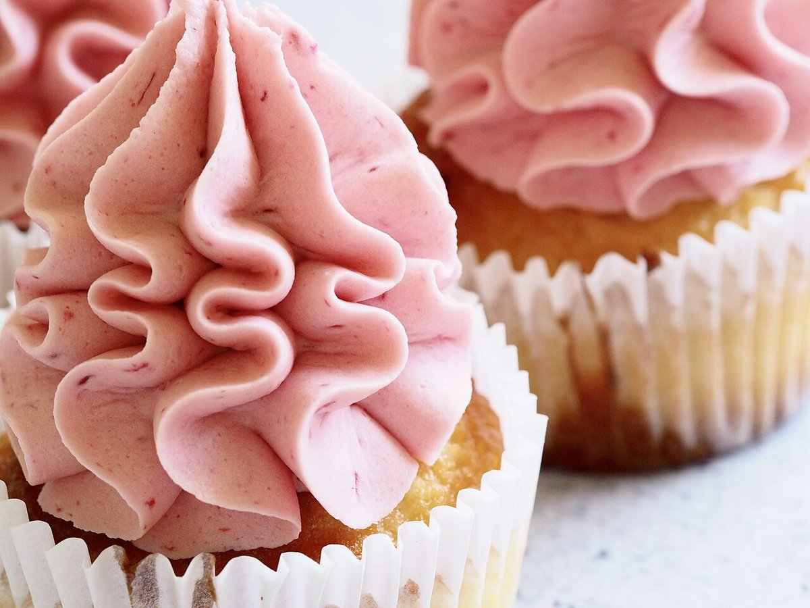
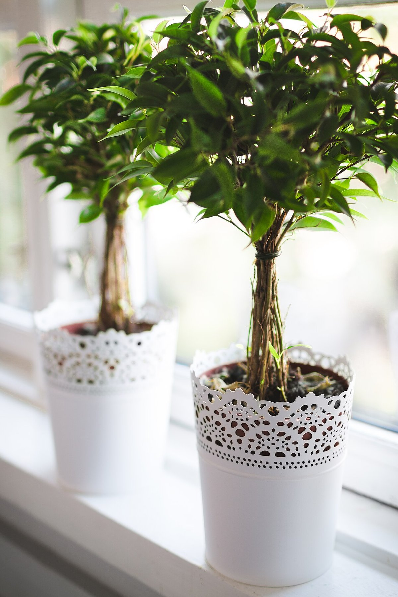
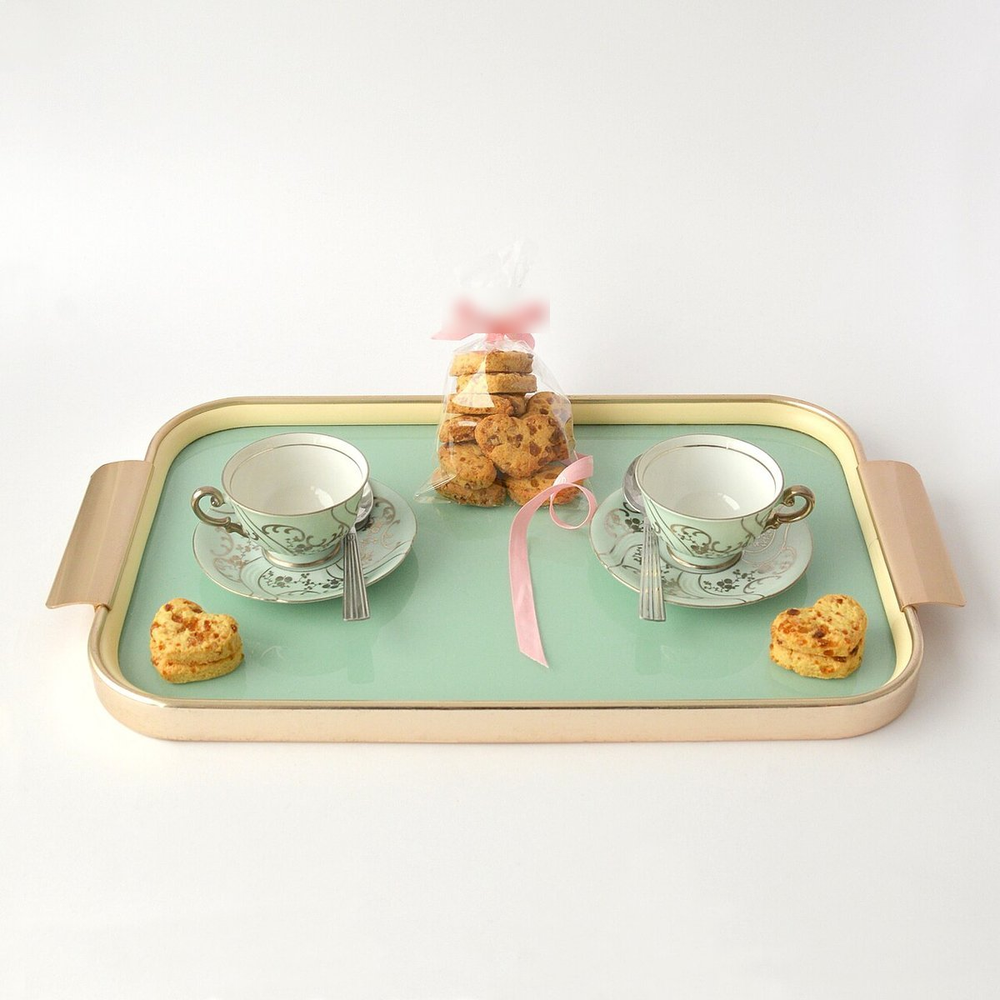

cafeもdoki
千葉県鎌ケ谷市粟野
ひと息つく時間を、ここで。
※サンプルの文面案です。店舗の公式な言葉ではありません。
ふらりと立ち寄って、ひと息つく。そんな時間のきっかけになれたらと考えた、サンプルの文面です。
掲載の写真はフリー素材のイメージです。店舗の実際の様子・メニューではありません。一部は他地域で撮影されたもの、または撮影地が不明なものを含みます。
営業時間・メニュー・料金は準備中です(お問い合わせください)
写真イメージ




写真はイメージです。店舗の実際の様子・メニューではありません。